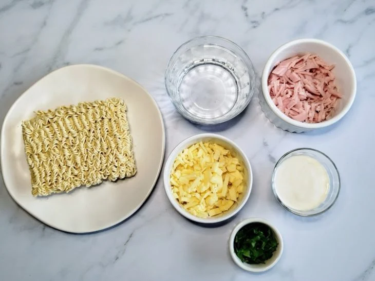
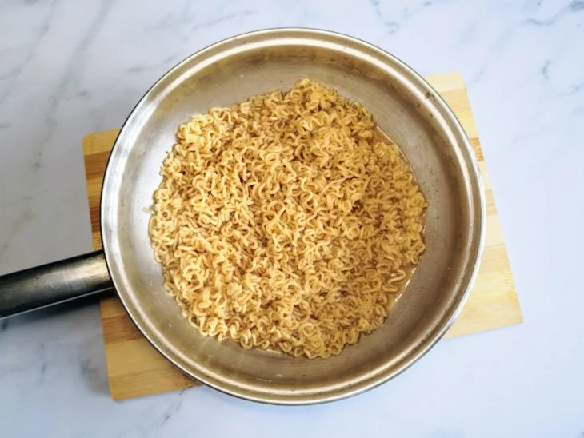
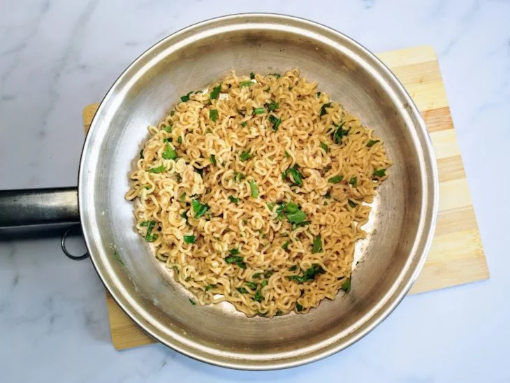
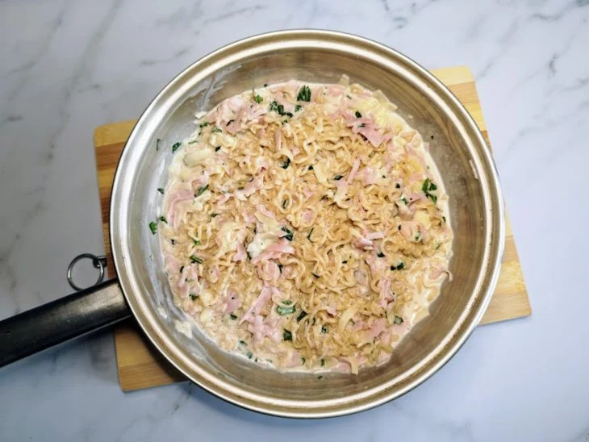

Miojo Cremoso
Ingredientes
- 1 pacote de miojo sabor carne ou outro de sua preferência (80 gramas)
- 300 ml de água para cozinhar o macarrão
- 4 fatias de queijo (70 gramas) (ou a gosto)
- 4 fatias de presunto (60 gramas) (ou a gosto)
- 3 colheres de sopa de creme de leite
- 2 colheres de sopa de cheiro-verde (ou a gosto)
Modo de preparo
- 
Reúna os ingredientes para fazer o miojo cremoso de maneira fácil e rápida para acabar com a fome;
- 
Coloque a água em uma panela média, no fogo alto. Quando estiver fervendo, adicione o miojo e o tempero. Mexa com um garfo até o macarrão de soltar e deixe cozinhar por 3 minutos;
- 
Pique o cheiro-verde e adicione na panela. Misture e deixe o macarrão cozinhar por cerca de 3 minutos ou até reduzir o caldo;
- 
Pique a mussarela e o presunto. Acrescente na panela e mexa até derreter. Adicione o creme de leite e misture novamente - indicamos 3 colheres de sopa, mas caso queira deixar ele mais cremoso, pode acrescentar mais;
-
Sirva o miojo cremoso com cheiro-verde salpicado por cima. Bom apetite!